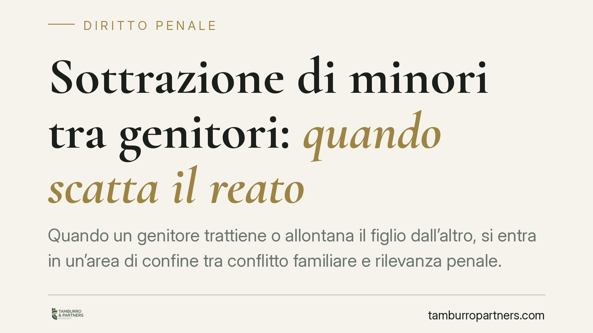

Sottrazione di minori tra genitori: quando scatta il reato
Quando un genitore trattiene o allontana il figlio dall'altro, si entra in un'area di confine tra conflitto familiare e rilevanza penale. Un orientamento della Cassazione sposta l'attenzione sul pregiudizio effettivo subito dal minore, non sulla mera violazione formale dei tempi di visita. Comprendere questa distinzione è decisivo per non trasformare un contrasto genitoriale in un procedimento penale.

Il tema
Nei procedimenti di separazione e affidamento è frequente che un genitore lamenti la condotta dell'altro: ritardi nella riconsegna del figlio, mancato rispetto dei turni, trasferimenti decisi senza accordo. La domanda ricorrente è se questi comportamenti integrino un reato.
La risposta non è automatica. Occorre distinguere la violazione formale delle statuizioni civili sul collocamento del minore dalla condotta che assume rilievo penale.
Inquadramento normativo
La norma di riferimento è l'art. 574 del codice penale, rubricato "Sottrazione di persone incapaci". La disposizione punisce chi sottrae un minore degli anni quattordici, o un infermo di mente, al genitore esercente la responsabilità genitoriale, al tutore o al curatore, ovvero a chi ne abbia la vigilanza o la custodia, e chi lo ritiene contro la volontà di tali soggetti. La cornice edittale prevede la reclusione da uno a tre anni.
È importante non confondere questa fattispecie con l'art. 574-bis c.p., introdotto per la "Sottrazione e trattenimento di minore all'estero". Quest'ultima ipotesi ricorre quando il minore viene sottratto o trattenuto oltre confine contro la volontà del genitore, con conseguente impedimento all'esercizio della responsabilità genitoriale. La sanzione è più severa ed è prevista, tra le pene accessorie, la sospensione dalla responsabilità genitoriale. La distinzione è rilevante proprio nei casi di trasferimento stabile del figlio in un altro Paese.
Su questo impianto è intervenuta la giurisprudenza di legittimità. Un recente orientamento della Corte di Cassazione penale ha valorizzato l'interesse superiore del minore come criterio interpretativo, richiedendo che il giudice verifichi il pregiudizio concreto subito dal figlio e non si arresti alla constatazione formale della violazione dei tempi di frequentazione.
Cosa cambia in concreto
Il primo punto è la separazione dei piani. La violazione dell'ordine giudiziale sul collocamento (per esempio, riconsegnare il figlio con qualche ora di ritardo) resta un tema che si affronta in sede civile, davanti al giudice della separazione o del procedimento sull'affidamento. Non ogni inadempimento diventa reato.
Il secondo punto riguarda l'elemento che fa la differenza sul piano penale: la condotta deve incidere effettivamente sul rapporto tra il minore e il genitore leso, sottraendo il figlio in modo tale da compromettere l'esercizio della responsabilità genitoriale e da arrecare un pregiudizio reale al minore stesso.
Terzo punto, spesso frainteso: il reato può configurarsi anche in regime di affidamento condiviso. La titolarità comune della responsabilità genitoriale non autorizza uno dei due a decidere unilateralmente collocamento, trasferimento o interruzione dei contatti con l'altro. L'affidamento condiviso non è uno scudo.
Occhio, però, alla lettura opposta. L'attenzione al pregiudizio concreto del minore non legittima condotte unilaterali. Trasferire stabilmente il figlio senza accordo o autorizzazione, recidere i rapporti con l'altro genitore, impedire ogni forma di contatto: sono comportamenti che possono integrare la fattispecie e che restano censurabili anche in sede civile, con ricadute sulle statuizioni relative all'affidamento.
Cosa fare in concreto
- Documenta ogni episodio rilevante (mancate consegne, comunicazioni, trasferimenti) con date, orari e prove scritte: la ricostruzione dei fatti è il presupposto di qualsiasi valutazione.
- Distingui il piano civile da quello penale: molti inadempimenti sui tempi di visita si affrontano davanti al giudice della famiglia, non necessariamente con una querela.
- Non assumere iniziative unilaterali sul collocamento o sul trasferimento del minore: agire senza accordo o autorizzazione espone a responsabilità civili e, nei casi più gravi, penali.
- Se il trasferimento riguarda l'estero, considera che si applica l'art. 574-bis c.p. e che esistono strumenti internazionali specifici per il rientro del minore.
Nei conflitti familiari l'assistenza tecnica consente di distinguere ciò che rileva sul piano civile da ciò che assume dimensione penale, evitando reazioni che aggravano la posizione di chi le adotta.
Disclaimer
Contributo informativo a cura di Tamburro & Partners - Avv. Giuseppe Tamburro. Non costituisce parere legale.
Ogni condominio ha una storia a sé.
Se gestisci un'amministrazione e vuoi un confronto su una specifica questione condominiale, scrivi allo studio. Ti rispondiamo entro un giorno lavorativo.